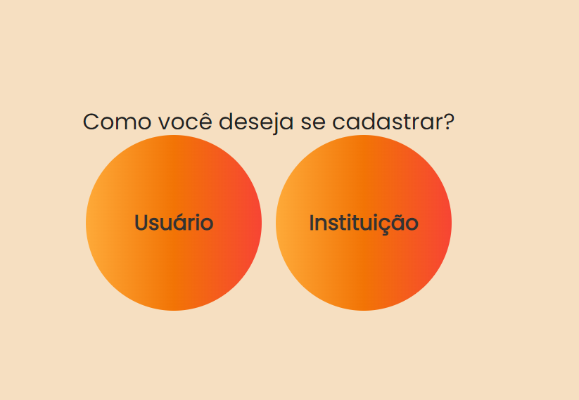
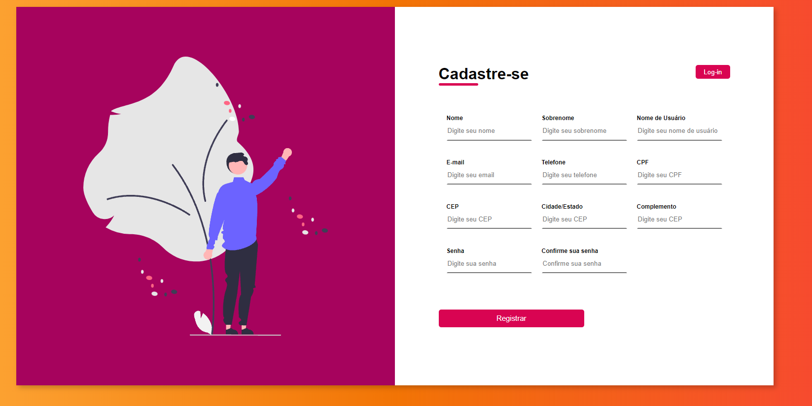
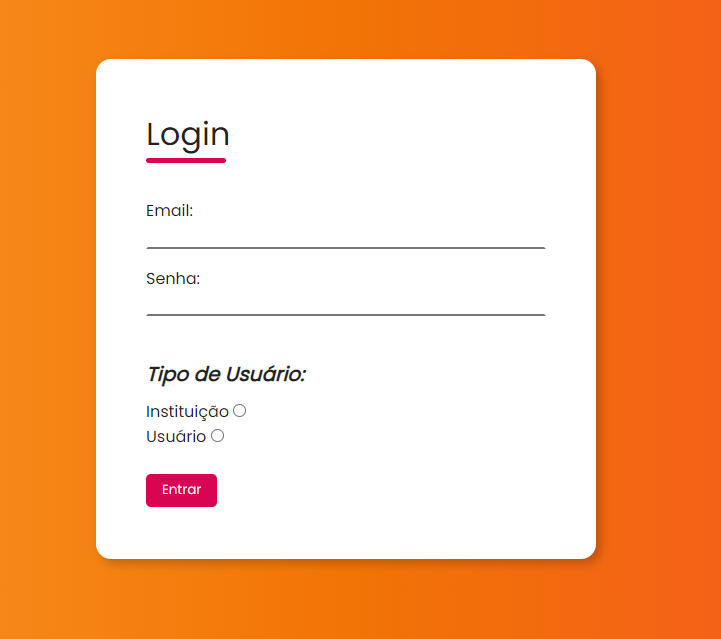
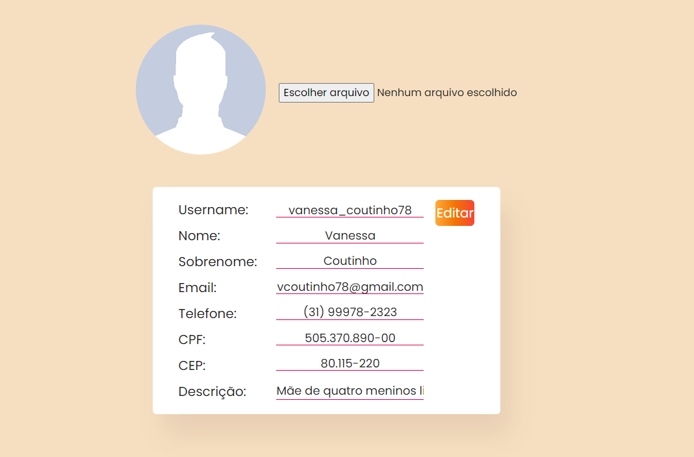
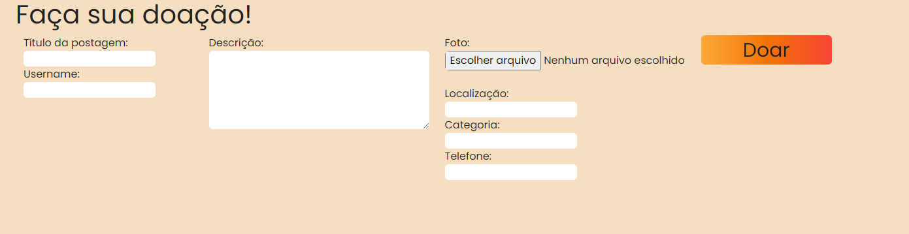
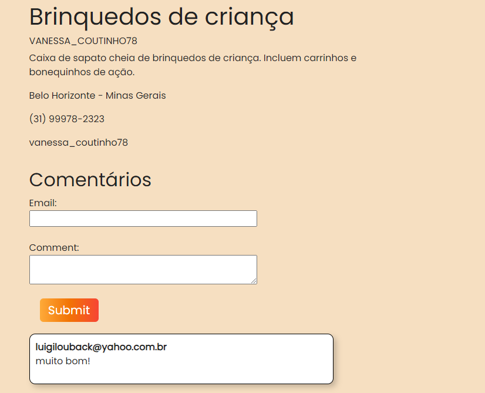
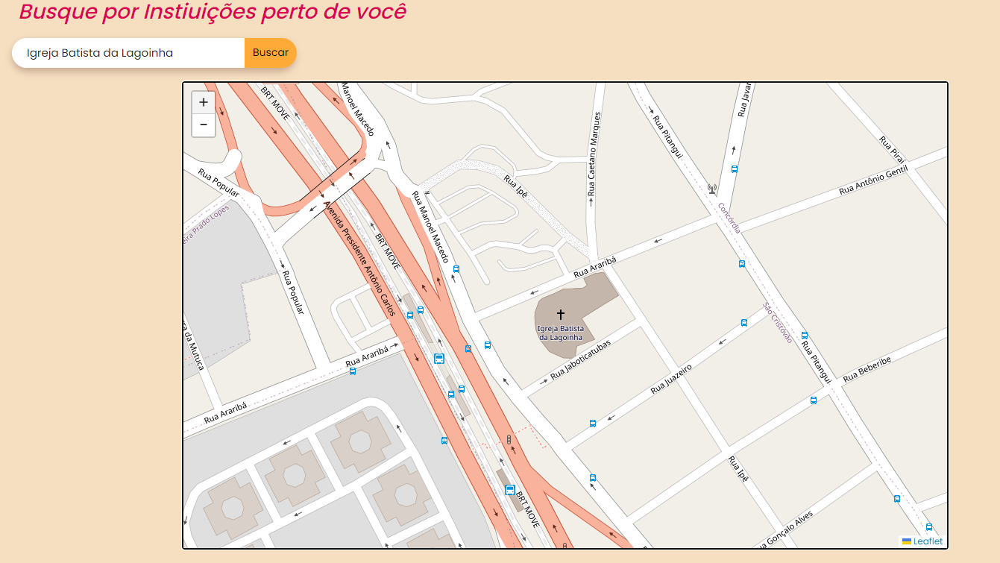

Doe.Me
Para a solução do problema foi projetado o site DOE.ME. O DOE.ME é uma plataforma que permite que qualquer pessoa, em qualquer lugar do mundo, possa postar suas doações e contribuir para causas sociais de sua escolha. Ao se cadastrar no site, os usuários podem criar anúncios detalhados sobre os itens que desejam doar, como roupas, alimentos, móveis ou até mesmo serviços voluntários.
Por outro lado, instituições de caridade também podem se cadastrar no DOE.ME e criar perfis para divulgar suas atividades e necessidades. Essas organizações podem descrever seus projetos, metas e como as doações recebidas serão utilizadas. Dessa forma, os doadores têm acesso a informações valiosas sobre as instituições e podem fazer escolhas informadas sobre onde direcionar suas contribuições.
Informações sobre o projeto.
O vídeo a seguir traz uma apresentação do problema que a equipe está tratando e a proposta de solução.
Nesta seção são apresentadas as telas desenvolvidas para cada uma das funcionalidades do sistema
Permite a inclusão de novos usuários e instituições em nosso sistema.

Permite a entrada de usuários e instituições em nosso sistema.

Permite que o usuário altera as informações do seu perfil.

Permite que o usuário faça postagens

Permite que o usuário faça comentários nas postagens

Permite que o usuário procure instituições em um mapa

Esta seção traz o detlahamento das estruturas de dados utilizadas na solução. É apresentado um exemplo de registro no formato JSON.
Registro das instituições do sistema utilizados para login e para o perfil do sistema
{ "id": "2", "tipo-de-user": "instituicao", "foto": "", "nome": "Igreja Batista da Lagoinha", "senha": "senha123", "telefone": "(31) 3429-9400", "email": "lagoinhaigreja@gmail.com", "cnpj": "XX. XXX. XXX/0001-XX", "cep": "31110-440", "endereco": "Rua Manoel Macedo", "numero": "360", "cidade": "Belo Horizonte", "estado": "Minas Gerais", "descricao": "A Igreja Batista da Lagoinha é uma igreja evangélica, que tem como missão levar a palavra de Deus para todos os povos. Somos uma comunidade que ama a Deus, ama as pessoas e ama a vida. Por isso, recebemos todos os tipos de doações possíveis para ajudar os necessitados", "site": "https://www.lagoinha.com/", "tag": "Igreja", "avaliacao": "" }
Registro dos usuários do sistema utilizados para login e para o perfil do sistema
{ "id": "1", "username": "vanessa_coutinho78", "foto": "", "tipo-de-user": "usuario", "senha": "senha123", "nome": "Vanessa", "sobrenome": "Coutinho", "telefone": "(31) 99978-2323", "email": "vcoutinho78@gmail.com", "cpf": "505.370.890-00", "cep": "80.115-220", "cidade-estado": "Belo Horizonte, Minas Gerais", "complemento": "Esquina com Rua Maria das Graças", "descricao": "Mãe de quatro meninos lindos, com roupas e brinquedos para doar.", "avaliacao": "" }
Registro das postagens para exibição na página "Explorar"
{ "id": "1", "tipo-de-user": "usuario", "titulo": "Brinquedos de criança", "username": "vanessa_coutinho78", "descricao": "Caixa de sapato cheia de brinquedos de criança. Incluem carrinhos e bonequinhos de ação.", "foto": "", "localizacao": "Belo Horizonte - Minas Gerais", "tag": "brinquedos", "contato": { "telefone": "(31) 99978-2323", "email": "vanessa_coutinho78" }, "avaliacao": "" }
Registro dos comentários das postagens